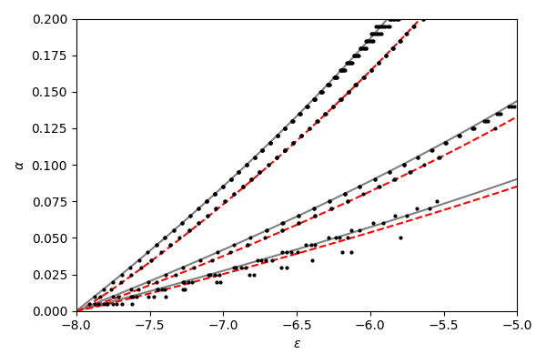

Crystals have a recurring lattice structure with periodicities of a few times \(10^{-10}\) meters. In a magnetic field, electrons in the crystal will undergo cyclotron motion with a different periodicity related to the strength of the field. In 1976, Douglas Hofstadter published a paper[1] describing the interesting behavior that appears in 2D systems as the two periodicities become comparable. The energy spectrum of such systems is a beautiful fractal butterfly. Let's compute it!
The symbol \(\alpha\) represents the ratio of the magnetic flux through a lattice cell (\(a^2 B\) for a square lattice of side length \(a\)) to the magnetic flux quantum \(h/e\). It is unitless.
$$\alpha = a^2 B / (h/e)$$
In most experiments we cannot change the size of the lattice, so we control \(\alpha\) by controlling the magnetic field. To reach \(\alpha=1\) in a typical crystal lattice requires fields in the tens of thousands of teslas, which is not feasible with modern technology. For context, MRIs go up to a few teslas. In recent years we've managed to sidestep this problem by using atypically large crystal lattices. More on that later.
If you are interested in the mathematical derivation of the butterfly then I recommend reading Hofstadter's original paper. It's quite readable, especially if you have studied the quantum Hall effect. After a fair amount of work, Hofstadter derives an eigenvalue equation relating the energy of a state \(\epsilon\) to \(\alpha\).
$$g_{m+1}+g_{m-1}+2\cos(2\pi m\alpha-\nu)g_m=\epsilon g_m$$
\(\nu\) is a phase that can take values between \(0\) and \(2\pi\).
The set of \(\epsilon\) and \(\alpha\) that solve this equation make up the butterfly. The strange result is that the solutions seem to depend on the rationality of \(\alpha\). Specifically, if \(\alpha = p/q\) for integers \(p\) and \(q\), then there will be \(q\) intervals of energy that solve the problem. This is unusual because we can continuously tune magnetic field. A tiny change in field may lead to an enormous change in \(q\).
For those who know what a Spirograph is, the rationality criterion is analogous to the fact that the Spirograph will eventually trace back over itself only if the ratio of the size of the wheels is rational.
Anyway, enough talk. Time to code. I'm going to use Python because it's rad.
import numpy as np
from scipy import linalg
import matplotlib.pyplot as plt
Hofstadter does additional work and shows that a necessary condition for the solution to be physically meaningful is for the following inequality to hold, where \(\alpha = p/q\) and \(\nu = \pi/2q\).
$$\left | \mathrm{Tr} \prod_{m=0}^q \begin{pmatrix} \epsilon - 2\cos(2\pi m \alpha - \nu) & -1 \\ 1 & 0\end{pmatrix} \right | \leq 4$$
In code, define the matrix like so:
def A(ε, m, α, ν):
return np.array([[ε - 2*np.cos(2*np.pi*m*α - ν), -1], [1, 0]])
I need a rational list of magnetic fields and energies to compute this trace at. The butterfly is symmetric above \(1/2\) so I can save computation time by only computing one half of it.
αs = []
for q in [2, 3, 5, 7, 11, 13, 17, 19]:
for p in range(1, q // 2 + 1):
αs.append((p / q, p, q))
αs = sorted(αs, key=lambda α: α[0])
εs = np.linspace(-4, 4, 1001)
Next, I iterate over all fields and energies, computing the trace of the product for each. This takes about 3 seconds on my laptop. In 1976 it probably took a bit longer.
trs = np.empty((len(αs), len(εs)))
for i, (_, p, q) in enumerate(αs):
for j, ε in enumerate(εs):
m = np.eye(2)
for k in range(q):
m = A(ε, k, p/q, np.pi/2/q) @ m
trs[i, j] = np.abs(np.trace(m))
Finally, I plot every point that has trace less than 4. If you rearrange this code such that there is a plot call for each point, the code will be much simpler but also extremely slow. That's why I filter the output before calling plot once.
xs = []
ys = []
for (α, _, _), tr in zip(αs, trs):
for ε, t in zip(εs, tr):
if t < 4:
xs.extend([ε, ε])
ys.extend([α, 1 - α])
plt.figure(figsize=(6, 4))
plt.plot(xs, ys, 'k,')
plt.xlabel('$\\epsilon$')
plt.ylabel('$\\alpha$')
plt.show()
Not bad! There are a few problems though. First, to get a better picture I'll need to go to higher \(q\) and finer \(\epsilon\). That gets slow fast, since the runtime depends linearly on the resolution in \(\epsilon\) and quadratically on \(q\). The actual traces can be very sharp in energy, which means that if my energy spacing isn't fine enough then I will miss solutions. This is especially noticable at the corners and edges of the butterfly. By going up to \(q=29\) I get a nicer image, but it's still not exactly perfect.

We can go back to the eigenvalue equation and solve it more directly.
def Hamiltonian(size, α, ν):
H = np.zeros((size, size))
for i in range(size):
H[i, i] = 2 * np.cos(2 * np.pi * i * α - ν)
H[(i + 1) % size, i] = 1
H[(i - 1) % size, i] = 1
return H
Now just calculate the eigenvalues for various different fields. No need to worry about rationality. This takes under a second on my laptop.
size = 200
αs = np.linspace(0.0, 0.5, 101)
νs = np.linspace(0, 2 * np.pi, 1, endpoint=False)
eigs = np.zeros((len(αs), len(νs), size))
for i, α in enumerate(αs):
for j, ν in enumerate(νs):
eigs[i, j, :] = linalg.eigvalsh(Hamiltonian(size, α, ν))
eigs = eigs.reshape((len(αs), len(νs)*(size)))
And plot them.
plt.figure(figsize=(6, 4))
plt.plot(eigs, αs, ',', color='k')
plt.plot(eigs, 1 - αs, ',', color='k')
plt.xlim(-4, 4)
plt.ylim(0, 1)
plt.xlabel('$\\epsilon$')
plt.ylabel('$\\alpha$')
plt.show()

Looks good!
There's an added bonus, too. Because we are computing energy states and not just ranges, we can easily find the density of the biggest gaps in the system. In electrical transport measurements in graphene, we usually directly control density, not energy, so this is important. Shortly after Hofstadter's work, G. H. Wannier predicted[2] that the density of the gaps would fall on straight lines described by diophantine equations \(\alpha = (n-s)/t\) for integer \(s\) and \(t\).
For a given field \(\alpha\) we have a list of eigenenergies. Sort them, then take the diff from one to the next. Gaps will show up as large diffs here. The density at the gap is the total number of states with lower energy. Because the list is sorted, that's just its index in the list.
topn = np.argsort(np.diff(np.sort(eigs)))[:,-10:] / size / len(νs)
plt.figure(figsize=(6, 4))
plt.plot(topn, αs, ',', color='k')
plt.plot(topn, 1 - αs, ',', color='k')
plt.ylim(0, 1)
plt.xlim(0, 1)
plt.ylabel('$\\alpha$')
plt.xlabel('$n$')
plt.show()

This recovers the expected diophantine behavior. Nice! This behavior has been observed in graphene-hBN superlattices by multiple groups[3][4]. Those aren't exactly identical since they are on a different lattice, but the idea is the same.
Note that at low field and low density we recover the Landau levels from the integer quantum Hall effect. Those show up when you have otherwise free electrons in a magnetic field.
From a computational perspective there's a pretty big problem with this approach, however. The Hamiltonian we are computing is finite, but in physics we live in an infinite-dimensional Hilbert space. This means that if we increase the resolution in \(\alpha\) then we may run into finite size effects.
Here all I have done is double the resolution compared to the previous plots. The two plots have \(\nu=0\) and \(\nu=2\). Note that there are states in the gaps. This is bad!


I think it's cool that you can still see the butterfly in very small lattices. Here I've set size to 10 and I'm sweeping \(\nu\) between \(0\) and \(2\pi\).

Again restrict ourselves to rational \(\alpha\) as in the first part. Another way to formulate the butterfly is the set of energies where this particular Lyapunov exponent is zero.
$$\log\left(\left | \det(L(\alpha) - \epsilon I)\right | \right) = 0$$
Where \(L(\alpha)\) is a \(q{\times}q\) matrix with the same entries as the Hamiltonian from the last section with \(\nu=0\). It turns out there's a function in numpy that computes the logarithm of the absolute value of the determinant of a matrix for you. This can be valuable if the determinant is likely to overflow, which happens in our case for large \(q\).
outs = np.zeros((len(αs), len(εs)))
for i, (α, _, q) in enumerate(αs):
for j, ε in enumerate(εs):
m = Hamiltonian(q, α, 0) - ε * np.eye(q)
outs[i, j] = np.linalg.slogdet(m)[1] / q
We can plot line cuts. To have evenly spaced traces, just pick one really big value of \(q\) (here I did 101) instead of all primes up to a point.

Note that due to finite resolution in energy and a sizable background signal, many of the levels don't quite reach 0. We can ignore that and plot it with pcolormesh. The Spectral colormap is the best.
plt.figure(figsize=(6, 4))
plt.pcolormesh(εs, np.array(αs)[:,0], outs, cmap='Spectral')
plt.pcolormesh(εs, 1 - np.array(αs)[:,0], outs, cmap='Spectral')
plt.xlabel('$\\epsilon$')
plt.ylabel('$\\alpha$')
plt.tight_layout()
plt.show()

Very cool. We've lost the ability to directly measure the density of the gaps, but it does look really neat.
Because one wasn't enough, a French group decided to add a second particle, along with a simple model for interactions[5]. The eigenvalue equation is similar to the single-particle case, only now we have to track two indices rather than one. There's also an additional term \(U\) that adds an interaction energy when the particles are on the same site.
$$g_{n+1,m} + g_{n-1,m} + g_{n,m+1} + g_{n,m-1} \\ + \left[2\cos(2\pi\alpha n + \nu_n) + 2\cos(2\pi\alpha m + \nu_m) + U\delta_{n,m}\right]g_{n,m} = \epsilon g_{n,m}$$
In practice I just set \(\nu_n=\nu_m=\nu\). Computing this is not much more difficult conceptually than before. The big problem is that the size of the Hamiltonian is now \(q^2{\times}q^2\). Finding eigenvalues and determinants of matricies tends to grow as \(n^3\) for an \(n{\times}n\) matrix, so you can see that this might be a problem.
def Hamiltonian(size, α, ν, U):
H = np.zeros((size*size, size*size))
for n in range(size):
for m in range(size):
H[(n*size + m + 1) % (size*size), n*size + m] = 1
H[(n*size + m - 1) % (size*size), n*size + m] = 1
H[((n + 1)*size + m) % (size*size), n*size + m] = 1
H[((n - 1)*size + m) % (size*size), n*size + m] = 1
H[n*size + m, n*size + m] = 2*np.cos(2*np.pi*n*α - ν) + 2*np.cos(2*np.pi*m*α - ν)
for n in range(size):
H[n*size + n, n*size + n] += U
return H
First I'll directly compute the eigenvalues for several values of \(U\) between 0 and 5. As \(U\) increases, it looks like part of the butterfly detaches from the rest and moves to higher energy. This is the butterfly associated with those states with the two particles on the same site.

We can also calculate the density of the gaps in the same way. Note that this is the number of energy levels below the gaps, which is actually the square root of the density. It's a small effect, but you can see the levels splitting as the interactions are turned on. I would do a bigger lattice but it's hot out and I don't have AC and I don't want my laptop to heat up the apartment too much.
